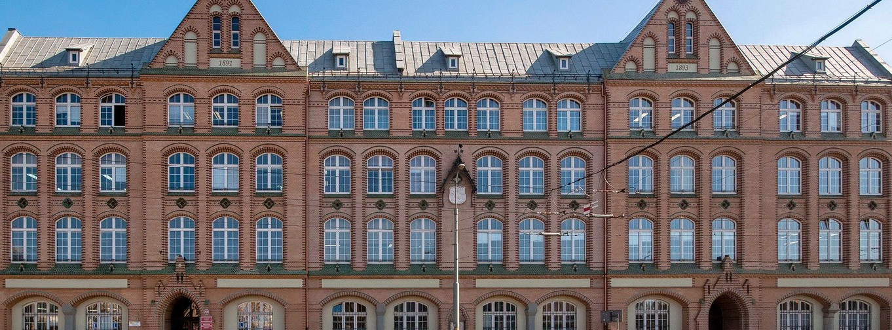
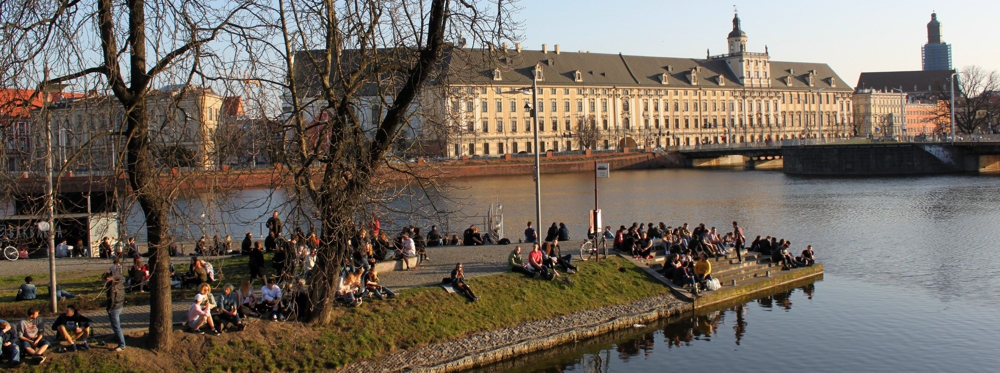

Liceum Ogólnokształcące nr IX im. Juliusza Słowackiego we Wrocławiu

Liceum Ogólnokształcące nr IX im. Juliusza Słowackiego we Wrocławiu
Nasza szkoła

Po trzech latach w tej szkole z czystym sercem mogę stwierdzić że
wybranie tej placówki było najgorszą decyzją w moim życiu. Większość
nauczycieli nie uczy tylko zadaje co trzeba umieć na najbliższy
sprawdzian. Szkoła bardzo utrudnia życie, nie da się tam nic
załatwić. W momencie gdy boli brzuch musisz czekać w szkole jeszcze
2 h na pielęgniarkę która napisze Ci zwolnienie po 3 rozmowach przez
telefon z rodzicami następnie z zaświadczeniem trzeba iść do
dyrekcjii sekretariatu I wychowawcy Totalna dezorganizacja połączona
z brakiem jakiegokolwiek szacunku do ucznia.IX LO to jednak prestiż i dobry poziom. Kto chce iść na lepsze
studia niech się nie waha. Kto chce przez 4 lata nic nie robić - to
na pewno nie tutaj... Nauczyciele na ogół zyczliwi, jak komuś się
noga powinie na sprawdzianie to nie ma problemu, aby się umówić na
poprawianie. Nie ma w szkole patologii ani gnębienia. W środku
szkoła nowoczesna (jak na Polskę). Super lokalizacja szkoły. Ścisłe
centrum, a jednocześnie jak jest okienko to można skoczyć do
pobliskiego parku lub do Galerii Dominikańskiej. Po lekcjach też
może człowiek od razu pójść do galerii ze swoją paczką i nie traci
się wtedy czasu by się po południu od nowa gdzieś umawiać.